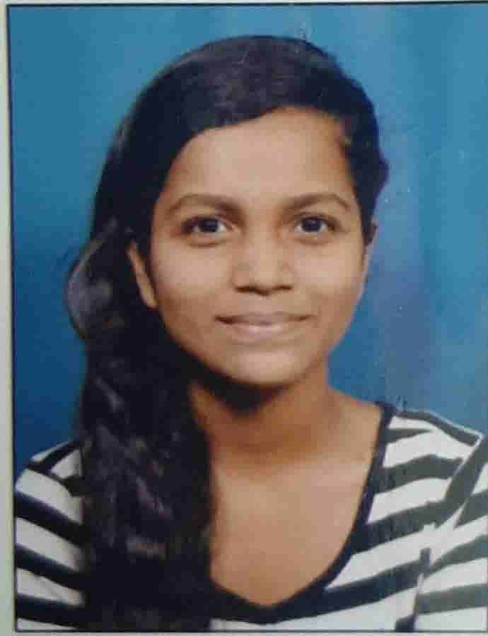

CIRRICULUM VITAE
|  |
Srushti Ajay Raut |
Location
|
| Email Id:- 7506243668 |
| Phone No:- srushtiraut2104@gmail.com |
| City:- Mumbai |
Objectives :
- To achieve high career growth through a continuous learning process, keep myself dynamic visionary and competitive with the changing scenario of the world.
- To contribute for the growth of the organization.
- I want to succeed in a stimulating and challenging environment, building the success of the company while I experience advancement opportunities.
- To work for an organization which provides me the opportunity to improve my skills and knowledge to growth along with the organization objective.
Strengths :
- Skilled and enthusiastic debugger of legacy code.
- Highly motivated and eager to learn new technologies and methodolies.
- Self confident and positive attitude.
- I involve myself in each other activities and will try my best to succeed that activity with the help of effective team players.
- I believe in team spirit and work in unity.
Technical Skills :
Operating System:- Windows XP, Linux
Language:- C, C++, Java, Python
Database:- Oracle-Sql
Others:- MS-Word, MS-Excel, MS-PowerPoint
Education Qualification :
Course/Degree |
School/College |
University/Board |
Year Of Passing |
Result |
| SSC |
Panday Girls' High School |
State Board Of Maharashtra |
2016 - 2017 |
Distinction |
| Diploma in Computer Engineering |
Vidyalankar Polytechnic |
Maharashtra State Board of Technical Education |
2017 - 2020 |
Distinction |
| B.E in Information Technology |
Mumbai University |
2020 - 2023 |
Persuing |
Persuing |
Cirricular Activities & Achievements :
- Achieved 1st place in Technical Quiz that was organized by college.
- Achieved many Government Certificates in Classical Dance form.
- Net Surfing
- Athlete
- I have a keen interest in adventures especially trekking and playing badminton
Personal Information :
Father's Name : Ajay Raut
Mother's Nmae : Akshata Raut
Date of Birth : 21-12-2001
Address : B-2B, Om Building,
8th floor,814,
M.P.Mills Compound,
Tardeo, Mumbai - 400034.
Languages : English, Hindi, Marathi, Basic French
Hobbies : Dancing, Reading Books & Travelling
Certification :
- I hereby, declare above infrmation is correct and true to the best of my knowledge.
Date : 29 / 08 / 2021
Place : MUMBAI